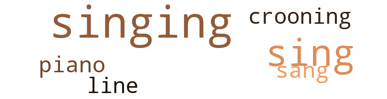
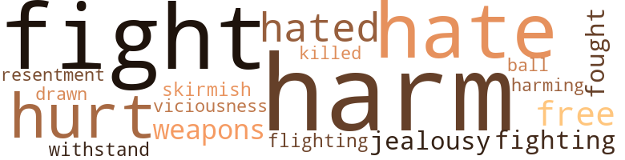
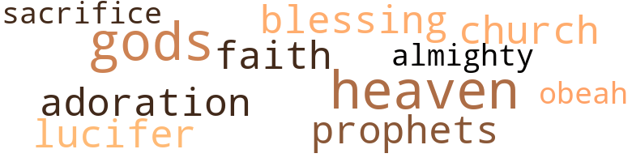

Dagmar of Green Hils, by Smith, Joe (1957)
16 music-related terms matched in this text.
Most frequent terms in this topic: singing (7); sing (5); sang (1); crooning (1); line (1)
croon.v.01
Definition: sing softly
| word | sentence |
|---|---|
| crooning | I love sing - ing ; but not that thing they call crooning . |
piano.n.01
Definition: a keyboard instrument that is played by depressing keys that cause hammers to strike tuned strings and produce sounds
| word | sentence |
|---|---|
| piano | This was a heartbreak to her father , who played the piano a little and accompanied her sometimes . |
sing.v.02
Definition: produce tones with the voice
| word | sentence |
|---|---|
| sang | Some of Bill 's hand mem - bers played and sang . |
| sing | I love sing - ing ; but not that thing they call crooning . |
| sing | I 'd like to hear you sing . |
| sing | Where do you sing ? " |
| sing | Miss Dagmar was going to sing at a church affair that com - ing Sunday , but she did n't want to commit herself , so she told Houston , " I 'm attending school for singing , or for learn - ing to sing , and I hope to give a recital very soon . |
| sing | Miss Dagmar was going to sing at a church affair that com - ing Sunday , but she did n't want to commit herself , so she told Houston , " I 'm attending school for singing , or for learn - ing to sing , and I hope to give a recital very soon . |
singing.n.01
Definition: the act of singing vocal music
| word | sentence |
|---|---|
| singing | She spent most of her spare time attending school for singing and was a diligent student . |
| singing | THE EARLY PART OF THE CORONATION EVENING WAS SPENT IN dancing and singing in the lounge . |
| singing | Miss Dagmar could n't help laughing at the description Mr. Houston gave of the singing star . |
| singing | I 'm studying singing myself . " |
| singing | Houston could see the resentment registered on Neville 's face , but he paid him no mind and said , in reply to Miss Dagmar : " No , I like singing . |
| singing | Miss Dagmar was going to sing at a church affair that com - ing Sunday , but she did n't want to commit herself , so she told Houston , " I 'm attending school for singing , or for learn - ing to sing , and I hope to give a recital very soon . |
| singing | I saw you singing two nights ago at home . " |
tune.n.01
Definition: a succession of notes forming a distinctive sequence
| word | sentence |
|---|---|
| line | For he , above all was forever scolding me about believing your stories , when he fell , according to your words , hook , sinker and line for the biggest story of all . " |
46 violence-related terms matched in this text.
Most frequent terms in this topic: harm (9); fight (7); hate (4); hated (3); hurt (3)
brawl.n.02
Definition: a noisy fight in a crowd
| word | sentence |
|---|---|
| free-for-all | A free-for-all developed , the mem - bers of the band joining in the melee . |
| free-for-all | One of the two men who had taken part in the free-for-all the night before came over and offered his services . |
brush.n.06
Definition: a minor short-term fight
| word | sentence |
|---|---|
| skirmish | What was the cause of the skirmish ? " |
defy.v.01
Definition: resist or confront with resistance
| word | sentence |
|---|---|
| withstand | It was well adjusted , like a submarine , and conditioned to withstand all the elements of fire or water , as it was am - phibious . |
draw.v.23
Definition: pull (a person) apart with four horses tied to his extremities, so as to execute him
| word | sentence |
|---|---|
| drawn | The new bartender had been installed , and Mr. Willing - ford had drawn up the papers giving Earl Singleton and Neville joint power . |
ferociousness.n.01
Definition: the trait of extreme cruelty
| word | sentence |
|---|---|
| Viciousness | " Viciousness was also a great servant of pride . |
fight.n.05
Definition: a boxing or wrestling match
| word | sentence |
|---|---|
| fight | The knowledge of being the most powerful , the fight for being the richest , the craving for the most adoration , are all in the service of pride . |
| fight | Ever since the dog and cat fight I 've come to learn to like you very much . |
| fight | Turning to the bar - tender , he said : " I think I can enjoy a drink after this cat and dog fight . " |
| fight | Last night was a little more than the usual argument , for on that occasion it had almost ended in a fist fight with another guest , a Mr. Eustace Davis , also from the West , and an attorney . |
| fight | He almost got into a fist fight with Mr. Davis . |
fight.v.02
Definition: fight against or resist strongly
| word | sentence |
|---|---|
| fight | After all , we had to fight for the right downstairs . " |
| fighting | To add to that , the tom cat came on the scene , and he too joined in fighting the dog . |
| fighting | The earl , answering him , said : " Mr. Houston , we are grownups and intelligent men , and I think we can discuss anything without getting into a quarrel or fighting . " |
| fought | You know , sir , this land was captured in the year 700 a.c. by S'divans , and the then King had to take to the hills , but he later fought back and succeeded in starting this country on its way to become the great nation it is to - day . |
| fought | No , you had real fighters that fought for the nation , and not for their own glory . |
| fight | Had he listened to the advice of his generals and not attacked the big bear - ( which is the main downfall of most dictators ; when they achieve a little success they be - come omnipotent and no one can give them advice ) - which meant he had to fight on two distant fronts at the same time , the outcome of the war could have been different . |
flight.v.01
Definition: shoot a bird in flight
| word | sentence |
|---|---|
| flighting | Therefore , your Highness , I suggest that you let your first duty be to honor Bill by flighting him . " |
harm.v.01
Definition: cause or do harm to
| word | sentence |
|---|---|
| harm | For the tit for tat way has never benefited anyone , but more often leads to harm , for it grows in strength with each succession , and the ultimate result is damaging . |
| harming | I appreciated very much the kind act he did in pre - venting Miss Dagmar 's cats from harming my little dog , and taking the chances he did in doing so . |
hate.n.01
Definition: the emotion of intense dislike; a feeling of dislike so strong that it demands action
| word | sentence |
|---|---|
| hate | The newspapers , the broadcasting stations , the movies , the commentators , and almost every - thing was directed to promulgating a hate condition of East against West and West against East . |
| hate | It had come to the point that where love was once taught , in many cases , hate was preached . |
| hate | - the ever-present Almighty , when He looked down on this world and saw all the corruption , hate and greed , and how man had turned away from Him for the things of this world , He too chose to turn away from man and let him destroy himself and his earthly gods , and make a fresh start . |
hate.v.01
Definition: dislike intensely; feel antipathy or aversion towards
| word | sentence |
|---|---|
| Hate | Hate is pride 's number one worker . |
| hated | For that gave the enemy the ma - terial they wanted to feed their people by proving to them that we hated them . |
| hated | The East made it a habit to use the psychology of doing and saying things to aggravate and irri - tate the West , knowing the West would make a mountain out of every little molehill , which the East in turn used to feed its people in proof of how much the West hated them . |
| hate | " Why do you hate Mr. Davis so much ? " |
| hated | He hated to displease Mr. Houston ; for although he was very excited , he was never - theless a good spender . |
hurt.v.04
Definition: cause damage or affect negatively
| word | sentence |
|---|---|
| hurt | For there never was a man or nation whose main aim was power and riches that did n't at some time crush and hurt those that got into their way in their climb to reach their goal . |
injury.n.01
Definition: any physical damage to the body caused by violence or accident or fracture etc.
| word | sentence |
|---|---|
| harm | After all , I do n't see any real harm in it . |
| harm | " I do n't think there is any harm in doing so . |
| harm | I 'll admit I did n't know all the plans of the Houstons , but I do n't think they really meant any harm . |
| harm | " I think that reporter has caused Miss Dagmar the most harm , " Mr. Houston said . |
| harm | They will do some harm , but they certainly are going to regret their actions , for with all their smartness I 'm sure they have underestimated our retaliatory striking power . |
| harm | TWO DAYS AFTER THE INCIDENT WHEN MISS DAGMAR 'S CATS had so viciously attacked Earl Singleton 's little dog , the earl returned to the hotel to thank the gentleman who had so bravely prevented the cats from doing harm to his dog . |
| harm | Earl Singleton lost no time in making inquiries regarding the person that had saved his dog from harm . |
| harm | The earl said to Mr. Houston : " Sir , I want to show my appreciation for the kind and brave act you per - formed when you so courageously prevented Miss Dagmar 's cats from doing harm to my little dog , Dench . |
jealousy.n.01
Definition: a feeling of jealous envy (especially of a rival)
| word | sentence |
|---|---|
| jealousy | " Tom , when pride gains control she employs all the evils to do her work : hate , vanity , jealousy , viciousness , and even ambition . |
| jealousy | The jealousy that ex - isted was that if one did something , whether it was good or bad , it was a cause for condemnation by the other . |
kill.v.10
Definition: cause the death of, without intention
| word | sentence |
|---|---|
| killed | They were killed in an automobile accident . |
musket_ball.n.01
Definition: a solid projectile that is shot by a musket
| word | sentence |
|---|---|
| ball | The male cat , jumping from the counter of the bar as the earl was backing away , would have landed straight in the face of Mr. Houston , like a pitched ball at a batter 's head . |
pain.v.02
Definition: cause emotional anguish or make miserable
| word | sentence |
|---|---|
| hurt | I do n't think anyone was ser - iously hurt . " |
| hurt | Dagmar , answering him , said , " Tom , I think your pride was hurt on account of the mishandling of your previous invention . |
resentment.n.01
Definition: a feeling of deep and bitter anger and ill-will
| word | sentence |
|---|---|
| resentment | Houston could see the resentment registered on Neville 's face , but he paid him no mind and said , in reply to Miss Dagmar : " No , I like singing . |
weapon.n.01
Definition: any instrument or instrumentality used in fighting or hunting
| word | sentence |
|---|---|
| weapons | " But then , looking at it from a political angle - when our leader made his great speech some time ago , telling the world of our great thermonuclear weapons , and the power we had , which was far beyond all of man 's dream , and our striking capabilities , and our growing strength - one of the brain and backbone of the East , sitting listening to that great speech , decided there and then that some way had to be found to change our way of thinking , and before he left that gathering the idea was bom in his mind to change their atti - tude to the friendly act . |
| weapons | But the talk drifted to arms and secret weapons , which caused young Houston to give them special attention , particularly when the stranger , Eugene Ramsey , addressed him in a low voice , saying , " Mr. Houston , I have reason to believe that you are a very great and important person in the scientific field . |
13 religion-related terms matched in this text.
Most frequent terms in this topic: gods (2); faith (1); Almighty (1); prophets (1); sacrifice (1)
blessing.n.05
Definition: the act of praying for divine protection
| word | sentence |
|---|---|
| blessing | Evelyn said , " I 'm glad you have at last seen fit to give him your blessing . " |
church.n.02
Definition: a place for public (especially Christian) worship
| word | sentence |
|---|---|
| church | Miss Dagmar was going to sing at a church affair that com - ing Sunday , but she did n't want to commit herself , so she told Houston , " I 'm attending school for singing , or for learn - ing to sing , and I hope to give a recital very soon . |
eden.n.01
Definition: any place of complete bliss and delight and peace
| word | sentence |
|---|---|
| heavens | It has been said there would be fire and hail and the heavens would open . |
| heaven | " Pride toppled Lucifer from heaven , and pride has suc - ceeded in destroying all the comforts that man had built for himself in this civilization . " |
god.n.03
Definition: a man of such superior qualities that he seems like a deity to other people
| word | sentence |
|---|---|
| gods | - the ever-present Almighty , when He looked down on this world and saw all the corruption , hate and greed , and how man had turned away from Him for the things of this world , He too chose to turn away from man and let him destroy himself and his earthly gods , and make a fresh start . |
| gods | You were struck without warning , but not without some kind of anticipation , and again the gods were on your side ; for the enemy , after attacking you and crippling your outpost defenses , instead of taking full advantage by using every ship and all available means of power , and gambling in every way possible , chose to sit back and give you time to build an attacking force . |
godhead.n.01
Definition: terms referring to the Judeo-Christian God
| word | sentence |
|---|---|
| Almighty | - the ever-present Almighty , when He looked down on this world and saw all the corruption , hate and greed , and how man had turned away from Him for the things of this world , He too chose to turn away from man and let him destroy himself and his earthly gods , and make a fresh start . |
obeah.n.01
Definition: (West Indies) followers of a religious system involving witchcraft and sorcery
| word | sentence |
|---|---|
| obeah | In some parts of the world , people believe in witchcraft , voodoo , obeah and other mysticism . |
prophet.n.02
Definition: someone who speaks by divine inspiration; someone who is an interpreter of the will of God
| word | sentence |
|---|---|
| prophets | All the prophets , analysts , prognosticators , and news announcers predicted everything but the right thing . |
religion.n.01
Definition: a strong belief in a supernatural power or powers that control human destiny
| word | sentence |
|---|---|
| faith | There is nothing we can do now but place our faith and trust in the ability of our leaders and hope for the best . |
sacrifice.v.04
Definition: make a sacrifice of; in religious rituals
| word | sentence |
|---|---|
| sacrifice | A man who could have married any aristocrat of his choice , a man who would sacrifice everything , and his country , and he practically isolated with the woman of his love , is some - thing beyond my conception . |
satan.n.01
Definition: (Judeo-Christian and Islamic religions) chief spirit of evil and adversary of God; tempter of mankind; master of Hell
| word | sentence |
|---|---|
| Lucifer | " Pride toppled Lucifer from heaven , and pride has suc - ceeded in destroying all the comforts that man had built for himself in this civilization . " |
worship.n.02
Definition: a feeling of profound love and admiration
| word | sentence |
|---|---|
| adoration | It seemed to me that they were more interested in smart witticisms and adoration , rather than serving the honest purpose of trying to solve the problems that confronted them . |